在 Windows 系統中有個「遠端桌面連線」的功能，可以讓我們以遠端控的方式登入、操作其他 Windows 電腦。Windows 系統遠端桌面連線預設所使用的連接埠（PORT）為「3389」，如果你不希望老是有人透過這個PORT來「踹」你的密碼，或是家裡或公司有其他電腦已佔用預設的 3389 連接埠，可以用下面的方法將被控端電腦的遠端桌面連線 PORT 改成其他連接埠
一、在被控端電腦的開始選單中點選 執行 （ 或按 視窗+ R 快速鍵 ） 開啟執行視窗，輸入 regedit 後按確定按鈕
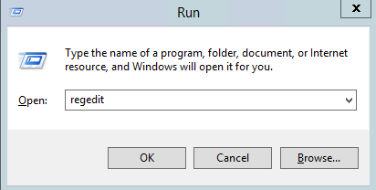
二、開啟登錄檔編輯器後，請找到下面這個登錄檔的機碼
1 | HKEY_LOCAL_MACHINE\System\CurrentControlSet\Control\TerminalServer\WinStations\RDP–Tcp\PortNumber |
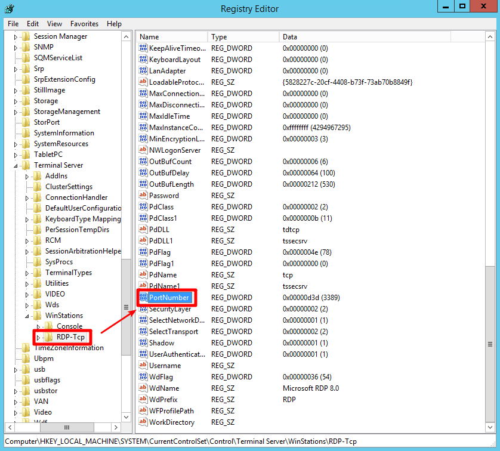
三、開啟修改視窗後，請先點選 Decimal ( 十進位 )，然後在 Value data ( 數值資料 ) 處輸入新的連接埠編號，如 5566，最後再按下確定修改
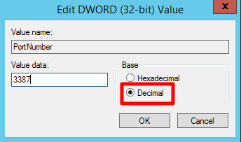
四、進入防火牆 Advanced settings ( 進階設定 ) 設置新的遠端 port 進入
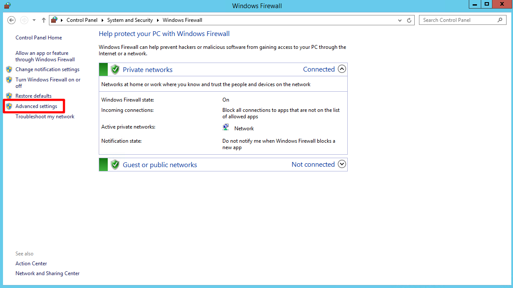
點選 Inbound Rules ( 輸入規則 ) 設置
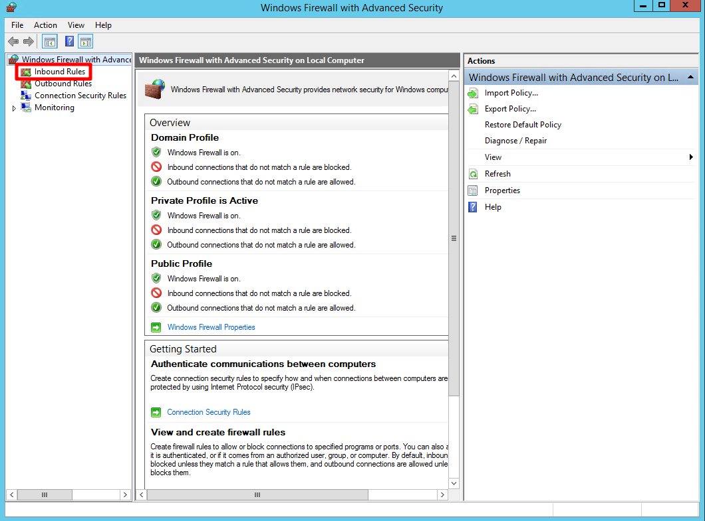
點選 Nwe Inbound Rule Wizard ( 新增輸入規則 )
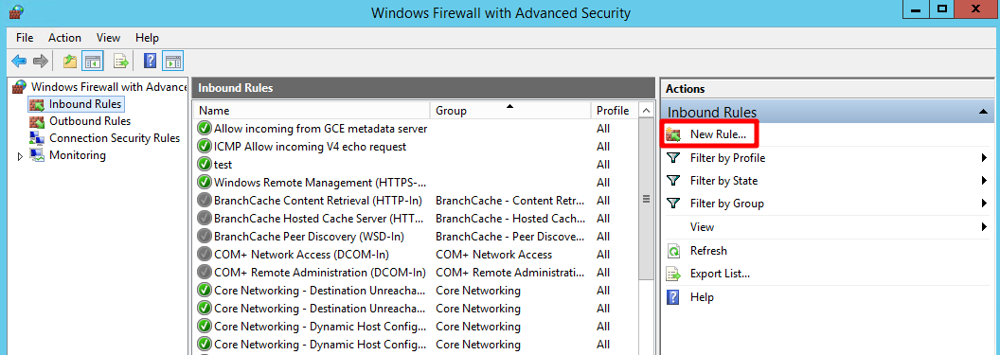
點選 port
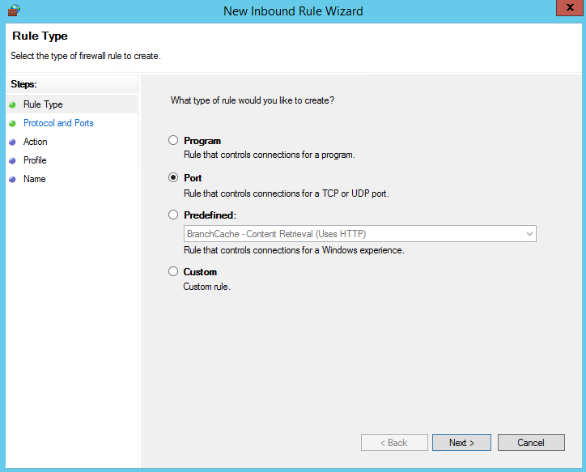
點選 Specific local ports ( 特定本機連接埠 ) 輸入你要的埠號
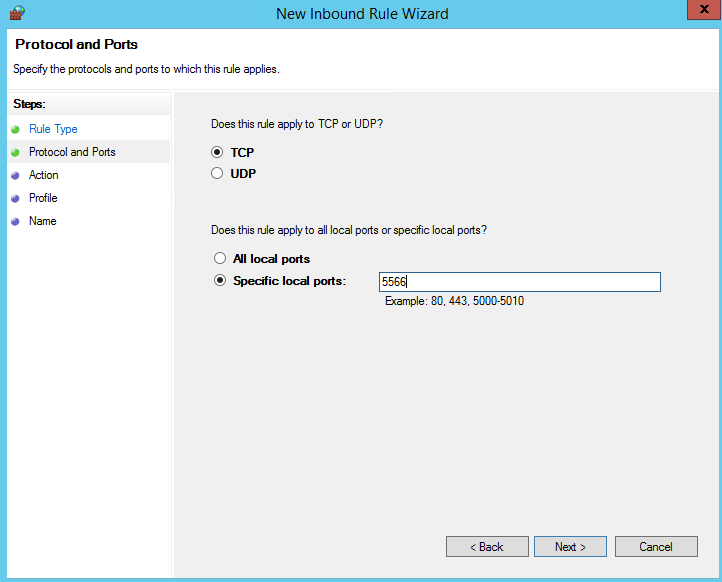
點選 Allow the connection ( 允許連線 )
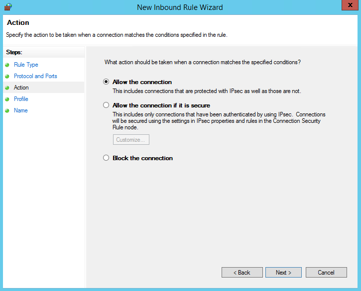
預設下一頁
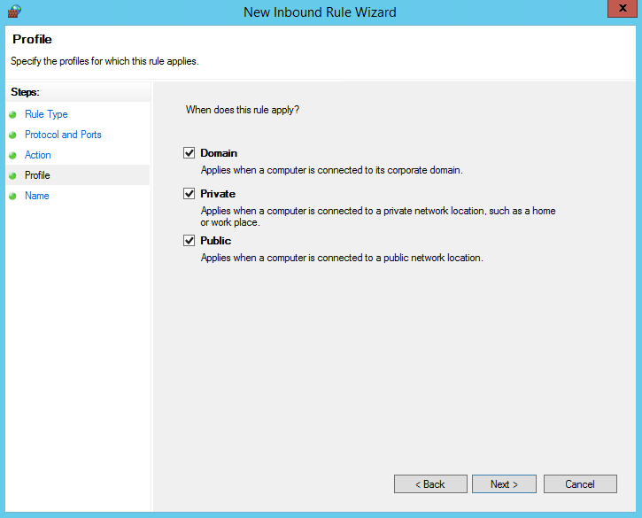
命名
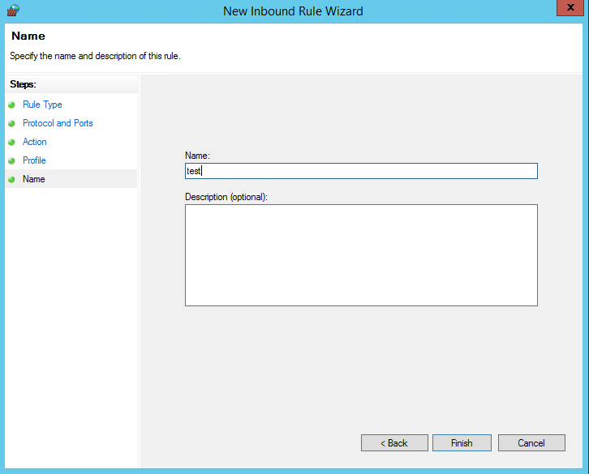
最後就會看到你加入的 port 名稱了
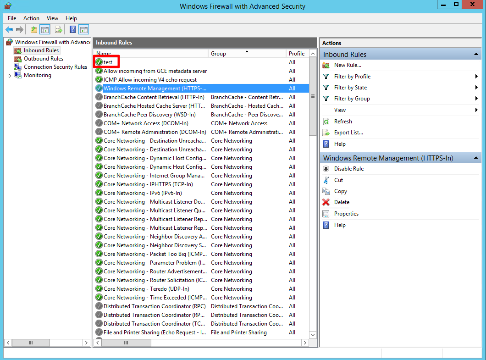
最後讓電腦重開機即可生效
接下來測試輸入 IP：新埠號
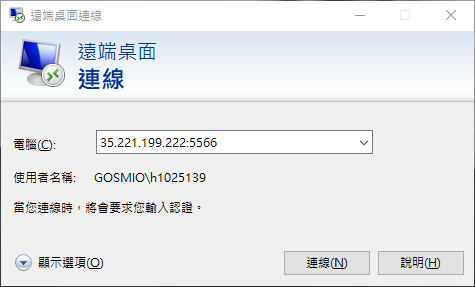